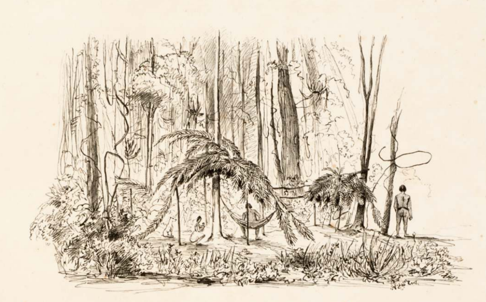
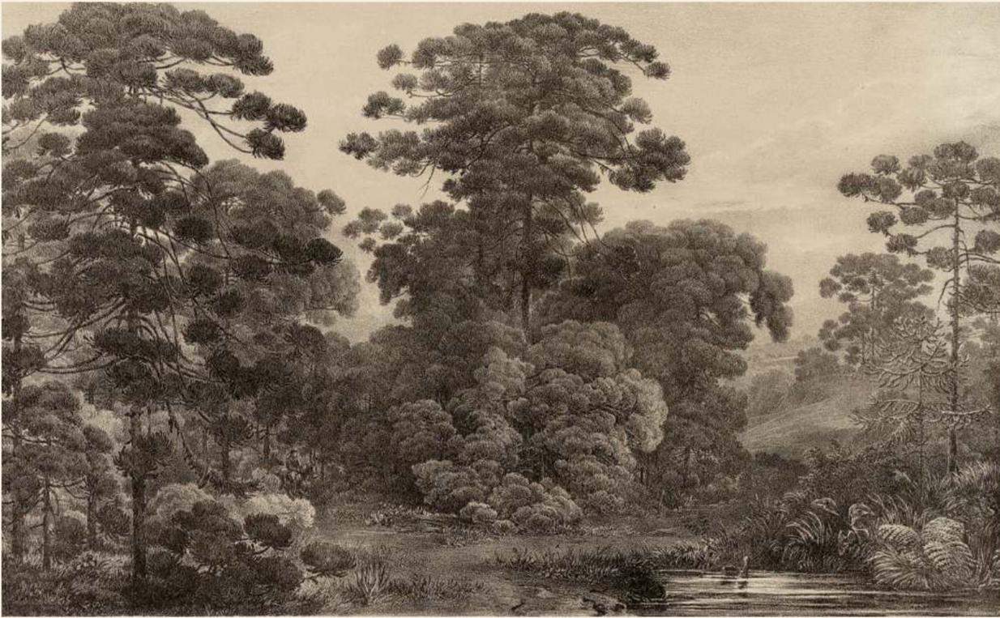
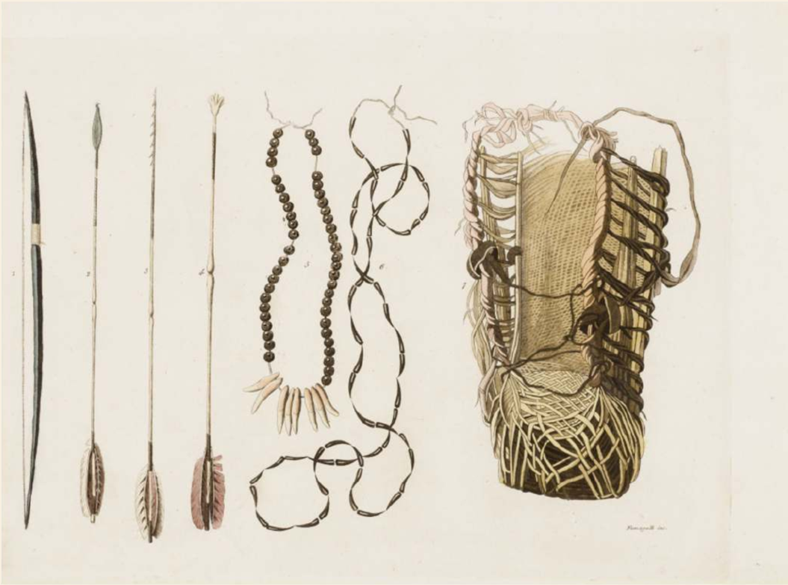
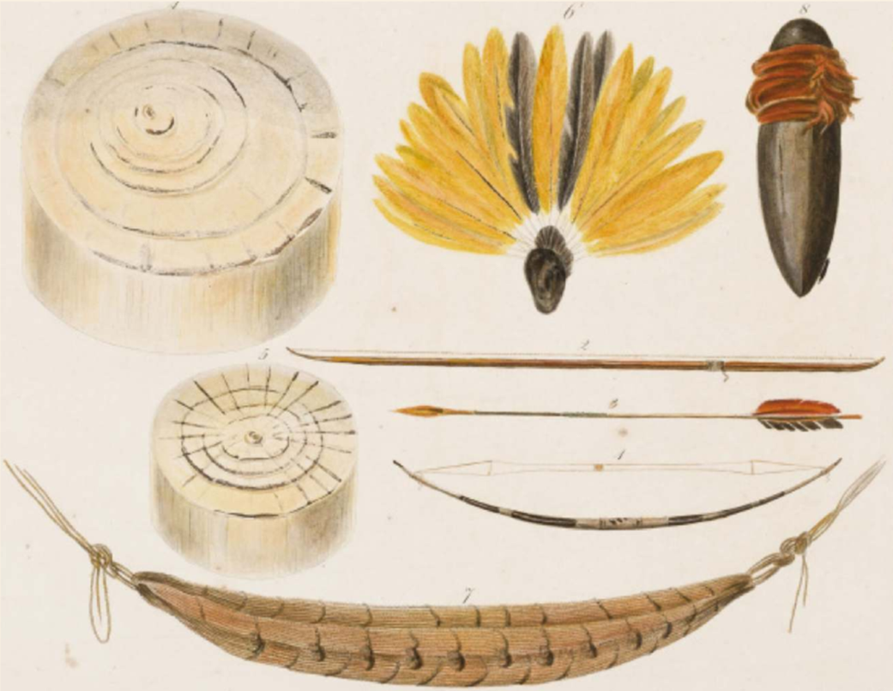

Reserva Kuará.
Área de Proteção Ambiental da Serra da
Mantiqueira
Rodovia MG350, km 81, Wenceslau Braz, MG,
Brasil
info@kuara.eco.br, www.kuara.eco.br.

Puris in Urnalde
bey Freixeiras den 8" Octb. 1842, 1847, Adalbert Heinrich Wilhelm
A Reserva
Kuará é uma pequena propriedade
rural da Área de
Proteção Ambiental da
Serra da Mantiqueira.
Totalmente coberta pela Mata Atlântica e habitada pelos indios Puri
até o século XVII, foi explorada e degradada
durante 300 anos
pela agropecuária convencional.
Pont de lianne,
1827-1835, Johann Moritz Rugendas
Recentemente, foi
convertida em reserva
de biodiversidade e cultura
locais, com o início de um
trabalho de restauração. Este trabalho
inclui o resgate e a conservação de espécies nativas da região,
bem como da cultura tradicional
relacionada ao uso e conservação dessa biodiversidade.

Lucus Araucaria
brasilianae in Prov. Minarum, c.1855, Carl Friedrich Philipp von Martius
A Reserva Kuará custeia este trabalho com:
Serviços e Produtos para Restauração
Florestal
◦ Projeto de
Viveiro de Mudas Florestais.
◦ Projeto de
Pomares de Sementes ou de Áreas de Coletas de Sementes.
◦ Projeto de
Florestas Multifuncionais.
◦ Projeto de
Recuperação de Áreas Degradas ou Alteradas.
◦
Pacotes para reflorestamento.
◦
Programas de educação ambiental.
◦
Jogos para educação ambiental.
Para expor sua demanda e obter um
orçamento, contate:
Humberto Santana, especialista em
restauração florestal da reserva,
humberto@kuara.eco.br,
(12) 99667-7676.

Armes, ornemens et
utensiles des Puris, 1822, Maximilian, Prinz von Wied
Biojoias
A artesã Thais Santana se inspirou na cultura Puri e na Mata Atlântica - respectivamente o povo
e o bioma originais da Serra da
Mantiqueira, e criou uma linha de biojoias com pedras e sementes
de árvores nativas desta região. Estas
biojoias permitem uma conexão com a
riqueza da cultura e
da biodiversidade dessa terra.
Você pode ajudar a preservar essa riqueza:
a cada biojoia comprada, uma nova árvore
nativa é
plantada e cuidada na Reserva Kuara. E
para registrar este apoio, esta nova árvore recebe uma
plaqueta metálica com o mesmo número do
certificado de originalidade de sua peça.
Conheça as biojoias Kuará pelo Instagram
@kuarabiojoias ou entre em contato diretamente
com a artesã:
thais@kuara.eco.br,
(35) 99963-7106.

Armes, ornemens et utensiles des Puris,
Botocudes, Machacaris et des Indiens de la côte, 1822, Maximilian, Prinz von
Wied.
___
Dedo de Prosa
Para quem chegou até aqui, reunimos uma
renca de referências sobre ecologia, biodiversidade e
cultura de nossa região que, se não render
uma boa prosa numa roda de fogueira ou ajudá-lo a
entender melhor o lugar em que vive, pode
ao menos curar uma insônia.
A Ferro e Fogo,
A História e a Devastação da Mata Atlântica Brasileira, de Warren Dean
Um clássico obrigatório para entender a
história ambiental da Mata Atlântica no Brasil, desde o
período colonial até o século XX. Dean
examina como as práticas de exploração econômica
impactaram drasticamente essa rica e
diversificada região florestal, analisando criticamente os
efeitos devastadores da ação humana sobre
a Mata Atlântica.
Origens das
Minas Gerais, de Alex Lombello Amaral
Já na segunda edição, ampliada, o livro
cobre a história das Minas Gerais do século XVII ao XIX.
Introdução à
Permacultura, de Bill Mollison e Reny Mia Slay
Apresenta os princípios e práticas da
permacultura, um método de planejamento de ambientes
produtivos, sustentáveis e resilientes,
sejam eles rurais ou urbanos. Desenvolvida na década de 1970
pelos ecologistas australianos
Bill Mollison e David Holmgren,
a permacultura foi influenciada por
diversas disciplinas como ecologia,
projeto de sistemas e etnobotânica e é indispensável em seus
novos projetos.
Curso de Permacultura, do
Neperma/UFSC
Um bom curso introdutório sobre o assunto.
((o))eco é um veículo de jornalismo sem
fins lucrativos fundado em 2004 que se dedica a documentar
os desafios, retrocessos e avanços dos
temas relacionados à conservação da natureza, biodiversidade
e política ambiental no Brasil.
Ecologia,
Comunidade e Estilo de Vida, de Arne Næss
Um dos melhores livros para se compreender
a ecologia profunda, uma filosofia ambiental
desenvolvida por Arne Naess na década de
1970 e que promove uma visão holística e profunda da
relação entre os seres humanos e o meio
ambiente. Aqui está um resumo de seus principais pontos:
1. Ecologia Profunda: Næss propõe a ideia de "ecologia
profunda", que vai além da preocupação com a
preservação dos recursos naturais para o bem-estar humano. Ele
argumenta que todas as formas de
vida têm um valor intrínseco, independentemente de sua utilidade
para os seres humanos. Ou seja,
devemos preservar a natureza não apenas para o benefício humano,
mas para respeitar sua própria
existência.
2. Criticando a Visão Superficial: O autor
critica o que ele chama de
"ecologia superficial", que vê a
natureza apenas como um
recurso para os humanos. Ele
sugere que essa visão está no centro da
crise ecológica atual e que uma mudança de mentalidade é
necessária para superar esse paradigma.
3. A Ética da Ecologia Profunda: Næss defende que a ética
ambiental deve ser baseada no princípio
de que todos os seres vivos têm valor por si
mesmos, e não apenas em
relação aos humanos. Isso
implica uma mudança no estilo de vida, com escolhas mais
conscientes e um respeito mais profundo
pelo meio ambiente.
4. Comunitarismo e Estilo de Vida: O autor explora como o estilo
de vida moderno, centrado no
consumo e na individualidade, precisa
ser repensado. Ele sugere
que um "estilo de vida ecológico"
deve enfatizar o bem-estar coletivo, a simplicidade e a conexão
com a natureza. Nesse contexto, as
comunidades também devem ser mais autossustentáveis, promovendo
um novo tipo de convivência
em harmonia com o meio ambiente.
5. Autossuficiência e Responsabilidade Individual: Arne Næss
também enfatiza a importância da
autossuficiência em um nível pessoal e comunitário, como forma
de reduzir a dependência do
sistema econômico global e seus impactos ambientais. Cada
indivíduo tem a responsabilidade de
adotar atitudes mais conscientes e sustentáveis no seu
cotidiano.
6. A Necessidade de Transformação Social: Næss argumenta que
para efetivamente resolver a crise
ecológica, é necessário transformar não
apenas as práticas individuais, mas também as
estruturas
sociais e econômicas que incentivam o consumo excessivo e a
exploração da natureza.
Em resumo, o livro propõe uma
mudança profunda na nossa relação com a natureza, baseada no
respeito e na interconexão entre todos os seres vivos, e defende
uma forma de vida mais simples e
comunitária, com um compromisso ético com a preservação
ambiental.
Simplicidade
Seja cantada,
vivida
ou sonhada, a simplicidade (de preferência, voluntária) é a base para
uma vida
plena e feliz. Essência de muitas
tradições religiosas e de correntes de pensamento como o
minimalismo ou o essencialismo, é o norte
para nossa conduta diária.
___
Reserva Kuará, CNPJ 48.973.006/0001-71.
Área de Proteção Ambiental da Serra da
Mantiqueira.
Rodovia MG350, km 81, Wenceslau Braz, MG,
Brasil.
info@kuara.eco.br, www.kuara.eco.br.
Copyright © Reserva Kuará - Todos os
direitos reservados.